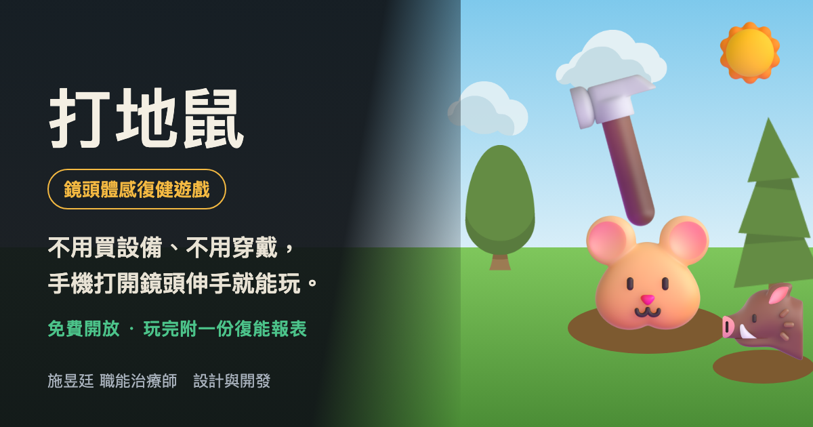
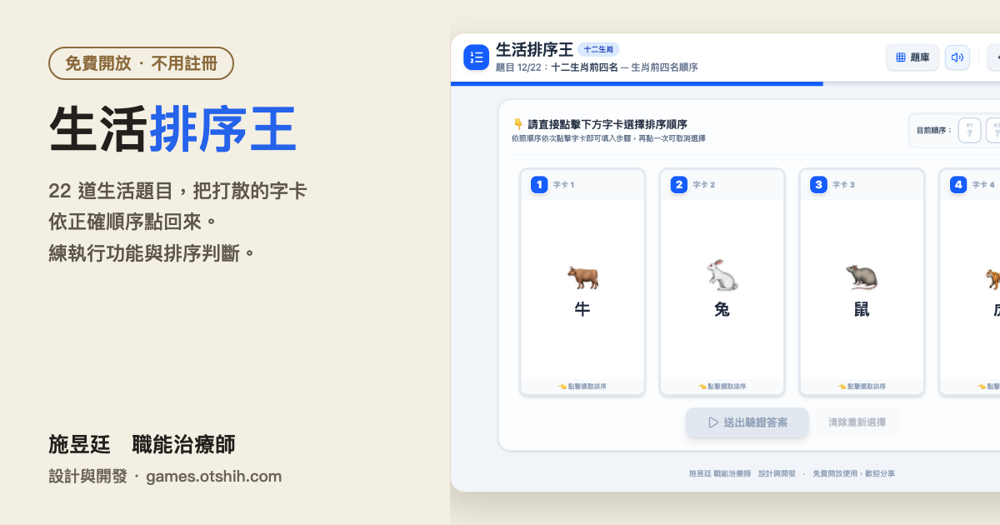
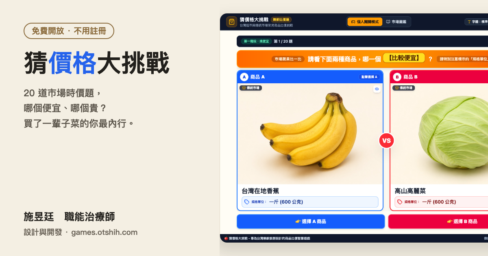
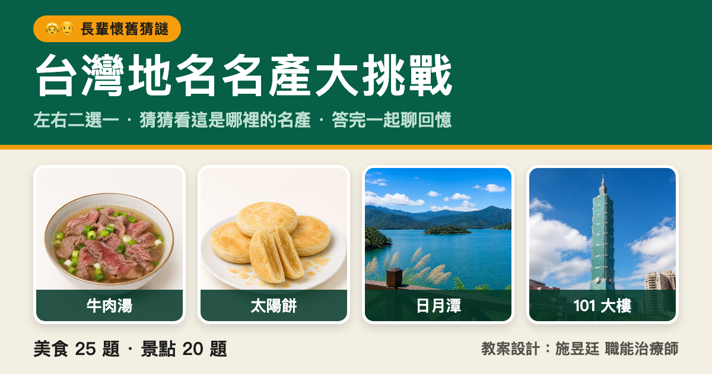

需要鏡頭

施昱廷 職能治療師 設計與開發
在長照現場，「運動」「訓練」這幾個字對長輩來說太像功課。 所以我把它們做成遊戲——不用買設備、不用穿戴，一台手機或電腦就能玩， 家屬、居服員、帶團體的老師都能直接帶著長輩開始。全部免費分享。
伸手、揮手、反應快，把動作練靈活
排一排、想一想，頭腦保持靈光



照著任務採果子：這回合只採紅的、下回合採三顆——一邊伸手一邊動腦，適合失智與輕度認知障礙的長輩。
整理中，很快開放。
出點力、撐久一點，手臂更有力氣
兩個人站在同一個鏡頭前比力氣，能力差很多也沒關係，系統會自動讓分讓雙方都有得拚。
整理中，很快開放。
第一次想先試試看，把「單局時間」拉到最短的 15 秒就好。